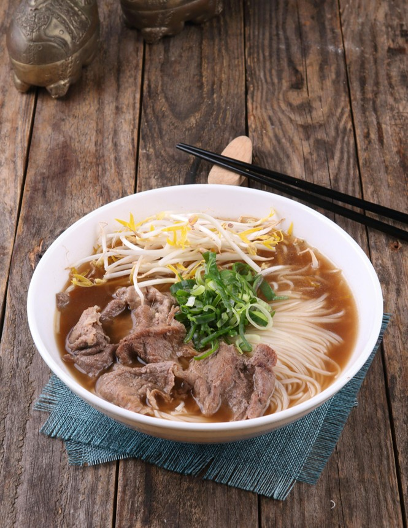
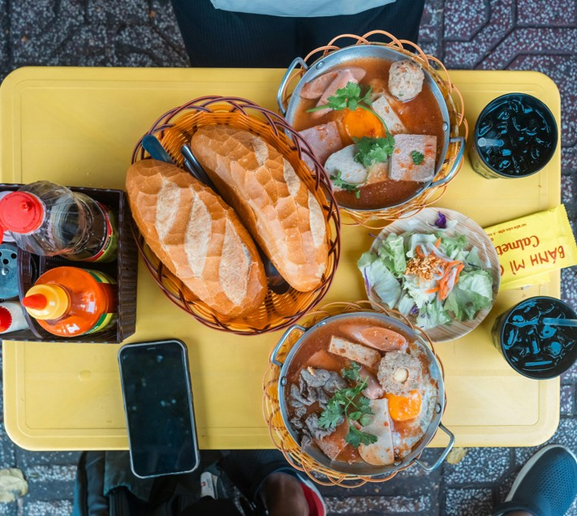
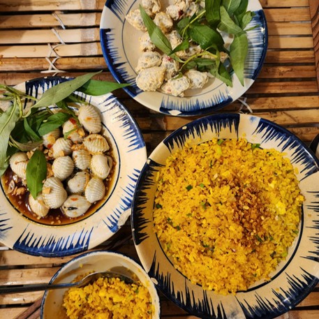
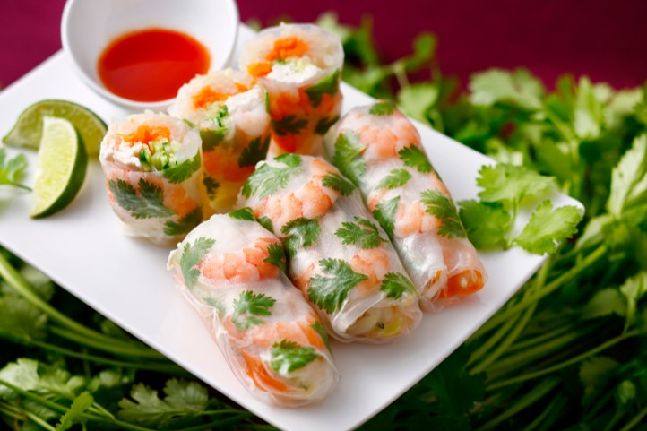
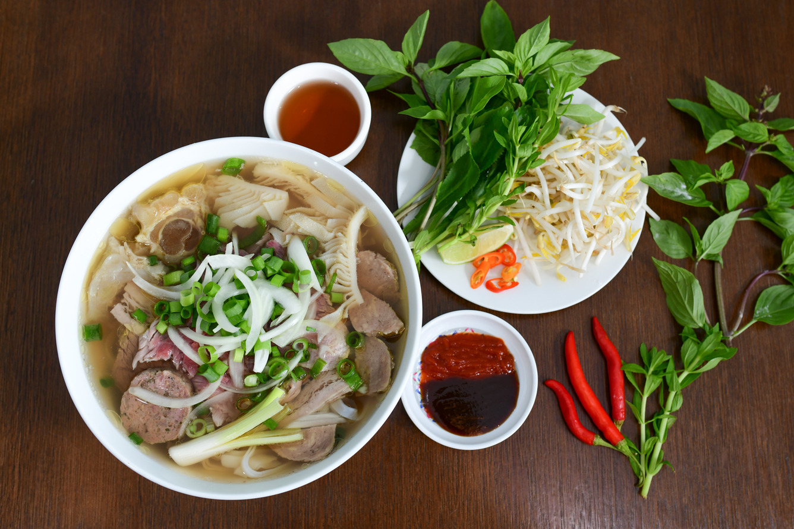
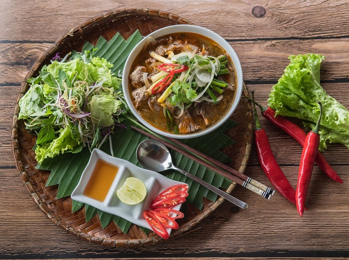
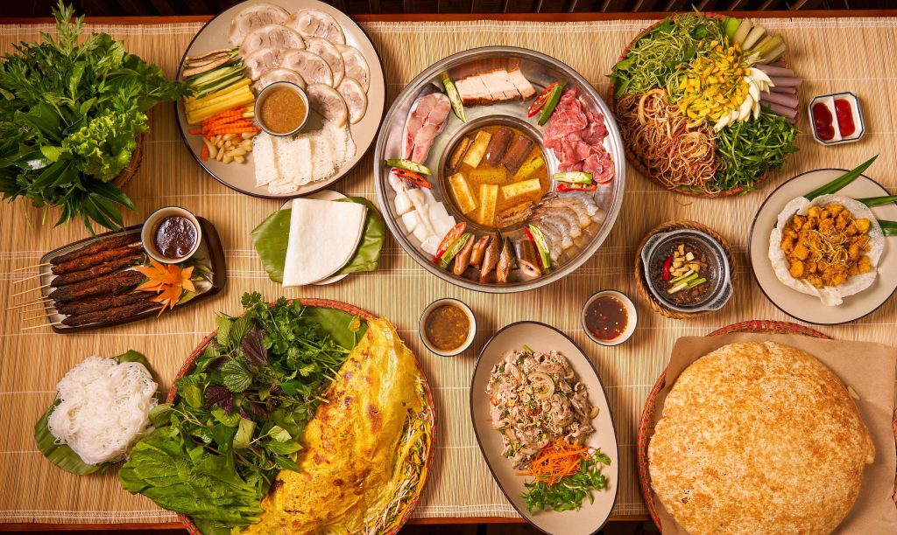
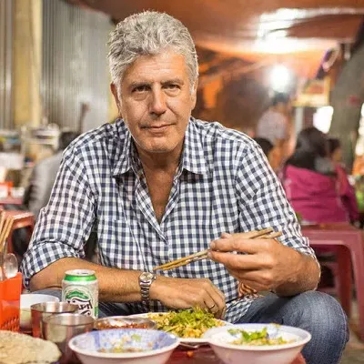
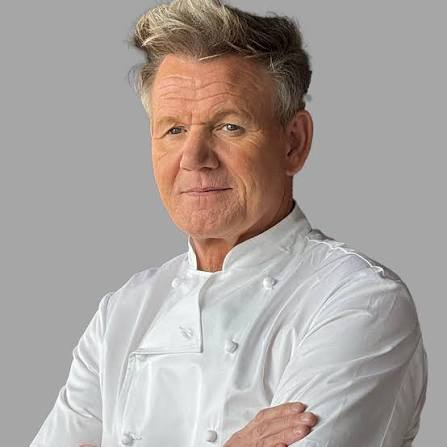
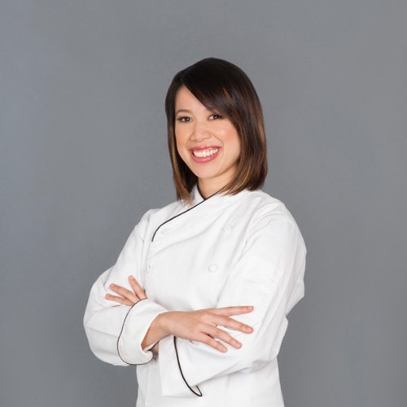

Ẩm thực
Việt Nam
Hương vị đặc sắc từ ba miền
Hành trình khám phá nét tinh hoa văn hóa và sự hòa quyện trọn vẹn của đất trời trong từng món ăn truyền thống. Sự giao thoa giữa văn hóa lúa nước, gia vị tự nhiên và sự biến hóa tinh tế từ Bắc vào Nam.
Khám phá ngay!



Mỗi dải đất mang một thanh âm riêng, từ sự tinh tế chốn kinh kỳ, nét
đậm đà xứ gió lào, đến nét hào sảng miền sông nước.

Vị Thanh Nhã & Cội Nguồn
Nổi bật với sự chuẩn mực, thanh đạm và ít dùng gia vị cay gắt. Món ăn miền Bắc chú trọng tôn vinh độ ngọt tự nhiên của nguyên liệu qua nghệ thuật ninh nước dùng thanh trong và cách bài trí khéo léo, tao nhã.
Món tiêu biểu:
Phở truyền thống, Bún chả, Bánh cuốn Thanh Trì, Chả cá Lã Vọng.
Khám phá Miền Bắc
Vị Đậm Đà & Khắc Khoải
Bản giao hưởng mãnh liệt của vị cay nồng và mặn mòi hương biển. Ẩm thực nơi đây là sự giao thoa độc đáo giữa nét cầu kỳ, trang trọng của ẩm thực cung đình Huế cùng sự mộc mạc, đậm tình người dân dã xứ cát.
Món tiêu biểu:
Bún bò Huế, Mì Quảng, Bánh bèo - nậm - lọc, Cơm hến.
Khám phá Miền Trung
Vị Phóng Khoáng & Trù Phú
Đậm đà vị ngọt tự nhiên, béo ngậy từ nước cốt dừa và sự biến tấu đa dạng từ nguồn sản vật phù sa trù phú. Món ăn phương Nam mang phong cách mộc mạc, hào sảng và đầy ngẫu hứng như chính tính cách con người nơi đây.
Món tiêu biểu:
Cơm tấm sườn bì chả, Hủ tiếu Nam Vang, Canh chua cá lóc, Bánh xèo miền Tây.
Khám phá Miền NamQua Lăng Kính Thế Giới
Những chia sẻ và cảm nhận đầy ngưỡng mộ từ các đầu bếp hàng đầu khi chạm ngõ hương vị Việt Nam

Cố đầu bếp kiêm nhà văn du lịch ẩm thực Mỹ
"Chuyến đi đầu tiên đến Việt Nam đã làm thay đổi hoàn toàn cuộc đời tôi. Mọi thứ ở đây dường như có một sự hòa quyện kỳ diệu, ngon lành và tràn đầy cảm xúc."

Bếp trưởng đạt sao Michelin, giám khảo MasterChef
"Tạ ơn Chúa là tôi không sinh ra ở Việt Nam, nếu không tôi chỉ là một đầu bếp tồi. Ở đây, người ta có sự chuẩn xác và tinh tế đáng kinh ngạc trong việc kết hợp các tầng hương vị thảo mộc."

Quán quân MasterChef Mỹ mùa 3
"Ẩm thực Việt Nam là sự tương phản hoàn hảo: giòn và mềm, nóng và lạnh, chua và ngọt. Đó là một bản hòa âm của cảm giác được gói trọn trong từng bát nước chấm."